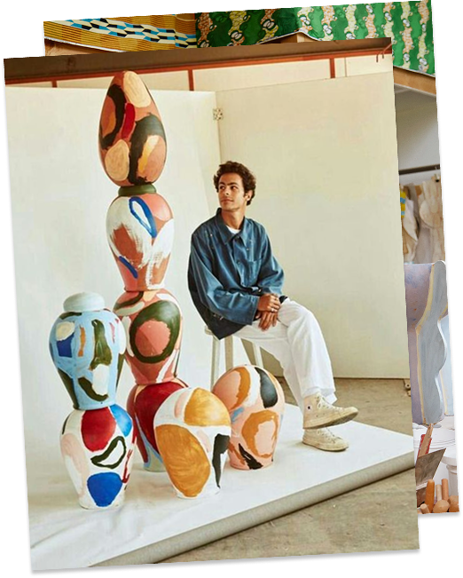

Веб-учебник по развитию личного бренда через зины
1
Вырази свою индивидуальность
Занимаешься творчеством и ищешь новые способы заявить о себе как о профессионале? Тогда тебе пора создать свой личный бренд. Электронный учебник prozine поможет сделать это просто, быстро, весело и в необычном формате: через зины.
Зин — независимый авторский журнал, свободный от каких-либо рамок и выпускаемый небольшим тиражом
Карина Эм
Зин про день рождения
Mateusz Zieleniewski
STELLWERK XXL
Варвара Кабанова
tōkyō-ga
2
Зины помогают рассказывать истории
Почему мы учим личному бренду через зины? Зины — это площадка для экспериментов. Отсутствие строгих правил позволяет найти свой визуальный стиль, а формат книги — простыми образами и словами донести свою историю.
Ещё одна особенность зинов — тиражность. Зины всегда печатаются в нескольких экземплярах, чтобы их можно было показать друзьям, обменять или продать. Хорошая возможность для продвижения своего творчества.
3
Содержание учебника
Часть 1
Создание личного бренда через зины
1. Основы личного бренда
2. Введение в зины
3. Создание зинов для бренда
Перейти к материалу
Часть 2
Продвижение и монетизация зинов
4. Продвижение зинов
5. Монетизация зинов
Перейти к материалу
4
Наше коммьюнити в соцсетях
Подписывайся на наш канал в Telegram. Здесь мы публикуем эксклюзивные материалы, проводим розыгрыши и просто общаемся.
Перейти в Telegram
Если хочешь посотрудничать или высказать пожелания, пиши в тг @uvvorobyova